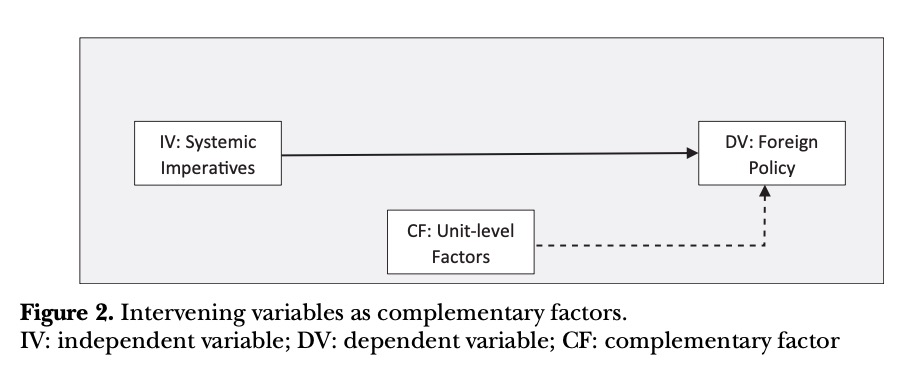

收录于合集 #理论研究 96个

作品简介
【作者】 Elias Götz，丹麦皇家国防学院战略研究所助理教授，主要研究方向为安全研究、国际关系理论和俄罗斯对外政策。
【编译】 王川（国政学人编译员，吉林大学公共外交学院）
【校对】 何伊楠
【审核】 陈想
【排版】 黄晨蕊
【美编】 游钜家
【来源】 Götz, E. (2021). Neoclassical Realist Theories, Intervening Variables, and Paradigmatic Boundaries. Foreign Policy Analysis, 17 (2), oraa026.
【归档】 《国际关系前沿》2021年第4期，总第31期。
期刊简介
《外交政策分析》（ Foreign Policy Analysis ）杂志是由牛津大学出版社代表国际研究协会出版的季刊。该期刊旨在以比较或具体案例的方式研究外交政策决策的过程、效果、原因或结果。根据Journal Citation Reports显示，2019年该刊的影响因子为1.329。
新古典现实主义理论、
干预变量 与范式边界
Neoclassical Realist Theories,
Intervening Variables,
and Paradigmatic Boundaries
Elias Götz
内容提要
新古典现实主义理论已经提出了一系列现实世界的因素，将其作为体系压力与国家对外政策行为之间的干预变量，例如国家能力、利益集团压力、战略文化与领导人特性等。尽管已经有上述阐述，但干预变量这一概念仍存在研究上的不足。作者认为，新古典现实主义者将调节因素、补充因素和主要原因这三种不同类型的因果因素归纳在了干预变量这一标签下。清晰地区分上述三种因素能够使学者更加准确地运用新古典现实主义路径进行分析，选择合适的研究设计进行检验，并更加清晰地界定新古典现实主义与其他观点的范式边界。
文章导读
01
作为调节因素的干预变量
一些新古典现实主义者运用“干预变量”（intervening variable）这一术语来指代调节因素（moderating factors）。调节因素影响假设的因果关系的强度，但是它们不会与因果直接相关，而且是外生的。换言之， 调节因素影响自变量对因变量效用的大小 。如图1所示，一些新古典现实主义者将干预变量作为调节因素，用于调节体系压力与实际国家行为之间关系的强度。
需要着重强调的是，将单元层次（unit- level）的变量作为调节因素的新古典现实主义者并不认为国内的变化是国家行为的主要驱动因素或原因。相反，这些因素只能解释国家为何以及何时未能成功应对体系刺激。当然，这些假设的前提是存在一个对于国际环境的最优反应。换言之， 只能在体系压力的背景下理解调节因素的因果效用 。这正是新古典现实主义方法与自由主义的区别所在，后者在解释时优先考虑国内因素。
自由主义学者认为，国家是一个代议制机构，其本身并非单一行为体，它将社会压力转化为政策产出。这种“自下而上”（bottom- up）的国家概念与很多新现实主义者所持有的“单一行为体”观念形成鲜明对比。而将国家-社会关系（state–society relations）作为调节因素的新古典现实主义者则采取了一种中间立场。他们提出的方法表明，至少在外交安全政策领域，当对外政策执行者，例如领导人、外交部和国防部以及负责制定和执行对外政策的其他政府官员，具有相对于次国家行为体的实质性自主权时，国家近似于一个单一行为体。在这种情况下，政府官员能够利用国家的权力潜力，制定连贯的对外政策。因此，国家作为一个机构能够有效地应对体系压力。相反，如果国家相对于次国家行为体几乎没有自主权，则最好将其理解为复合行为体，而非单一行为体。在这种情况下，社会行为体将利用国家（或其某些部分），将政策导向他们私人的、狭隘的利益。实际上，对外政策是由次国家集团的特殊议程而非整个国家的战略利益决定的。因此， 国家应被视为单一行为体还是复合行为体取决于国家的自主程度 。
此外，新古典现实主义者还考虑了政府当局调动资源和向社会征税的不同能力。新古典现实主义者认为，国家从社会汲取财富的能力是有效应对来自国际体系的威胁和机遇的先决条件。
简而言之，运用国家能力（包括国家自主性和汲取能力）作为调节因素的新古典现实主义路径将国家视为一个变量而非常量，这在根源上将其与自由主义和新现实主义区分开来。
02
作为补充因素的干预变量
第二类新古典现实主义者运用干预变量来指代补充因素（complementary factors）。补充因素是指增强或削弱主要变量效果的因素，但这些因素是独立的，或没有与主要变量相关的交互作用(interaction effects)。补充因素的基本概念是“剩余方差”（residual variance），这意味着要解释的现象是由几个独立的作用因素的合力造成的。然而，其中某个或某组因素解释了比其他因素更大的方差部分。如图2所示，一些新古典现实主义者 运用单元层次的干预变量作为补充因素来解释国家应对体系刺激的具体形式或手段。

新古典现实主义认为体系压力是最主要的原因，可以解释国家行为的总体状况，而补充因素是在单元层次解释一些剩余方差。换言之， 变量是存在层级的。单元层次的因素是对外政策的决定因素之一，可用于解释具体方式和手段的选择，但体系压力仍然是被用于解释国家战略方向的重要因素。 因此，将干预变量用作补充因素的新古典现实主义方法与对外政策的自由主义理论是截然不同的，自由主义理论仍认为国内层次的因素优先于体系层次的因素。
与此同时，在国内层次纳入补充因素也对新现实主义的“单元同质”假定提出质疑。体系压力为国家行为提供了广泛的行为模式，而国家的个体特征解释了为什么国家对外部刺激的反应方式相似但不完全相同。用统计学术语来说，一组因素（体系条件）占因变量方差的很大一部分，而另一组因素（单元层次条件）占方差的较小但非平凡（nontrivial）的一部分。这是将干预变量用作补充因素的新古典主义现实主义方法的基本逻辑。
最后，必须强调的是，与调节因素相比，补充因素不会影响自变量和因变量之间关系的强度。相反，补充因素解释的是研究中未能被自变量解释的现象的某些方面，也就是体系压力无法为国家行为提供充分解释的情况。而将干预变量用作调节因素的新古典现实主义则只试图解释国家是否能有效地应对体系压力。这意味着，如果调节变量的效用强度较低，体系压力就足以解释国家的国际行为。由于这两种因素在因果链条中发挥着不同的作用，因此新古典现实主义者在没有进一步作出解释的情况下，将干预变量一词指代为调节因素和补充因素可能会给研究带来潜在麻烦。
03
**** 作为主要原因的干预变量
第三类新古典现实主义者运用干预变量这一术语来指代充当主要原因（primary causes）的单元层次因素，与此同时，体系影响被降级为背景层面的包容性（permissive）条件。主要原因是对因变量有直接效用的因素，包容性条件使某些因果关系具有可操作性，但是包容性条件与因果均无关。换言之， 主要原因在包容性条件或其他有利的环境下充当自变量 。正如图3所示，一些新古典现实主义者认为国际因素会增加或限制潜在对外政策的选择范围，但是这些因素并不会塑造国家行为，而单元层次的因素则能够用来解释实际的对外政策选择和国家行为。
许多新古典现实主义研究认为国际压力和约束总体来说是高度模糊的。因此，为了解释国家行为，必须考察驱动国家行为的单元层次因素和过程。正如批评者所指出的，国内层次的因素在此类解释中发挥了很大的作用，因此这些解释与对外政策的自由主义模式极为相似，其能否称之为新古典现实主义是不清楚的。然而，并非所有将干预变量作为主要原因的新古典现实主义研究都认为体系压力是模糊的。相反，他们认为单元层次因素与国际层次因素的相对的因果重要性应取决于一国的战略环境。
针对此，一些学者已经提出了总体的分析框架，将国家行为在何时主要由国际层次因素决定、何时主要由单元层次因素决定的条件具体化。他们将约束性或包容性的战略环境与体系压力的明确性结合。从本质上讲，这些学者的框架表明，如果一个国家的战略环境约束性较高，并且体系压力显而易见，那么国际层次的因素将塑造对外政策行为。相反，如果一个国家的战略环境约束性较低，体系压力也不明确，那么它的对外政策就会受到单元层次因素的影响。简言之，一个国家战略环境的包容性和体系压力的明确性，是决定一个国家对外政策行为是由内部因素还是外部因素（以及在多大程度上）决定的一个选择变量。
这种类型的分析框架为研究对外政策形成过程中国内与国际因素的交互作用提供了理论基础。 然而，只有在体系条件具有包容性的情况下单元层次的因素才是重要的，因此其仍然是一个“由外向内”（outside-in）的方法。
04
范式边界与新古典现实主义
的区别性
对三种类型的干预变量进行概念化有助于阐明新古典现实主义与古典现实主义和新现实主义的关系。一些学者认为新古典现实主义代表了新现实主义的逻辑延伸，另一些学者则认为新古典现实主义是对古典现实主义的重新理解。上文的讨论表明，将现实主义范式视为一个以新现实主义与古典现实主义为端点的连续体（continuum）更有助于我们理解。如图4所示，新古典现实主义方法占据了这个连续体中间部分的各个点。
将干预变量用作调节因素的新古典现实主义理论更接近于新现实主义的端点。这些理论限制了单元层次因素在解释明显异常的对外政策行为中的作用，即与体系压力相悖的行为。因此，这些理论更接近于新现实主义对于国际政治的理解。现实主义范式连续体的中间部分是将干预变量用作补充因素的新古典现实主义理论，这一理论认为单元层次的因素必须用于解释国家应对外部威胁和机遇的方式，其将新现实主义的体系假设与古典现实主义对于单元层次影响的关注相结合。
最后，还有一些新古典现实主义理论认为体系层次的压力为单元层次因素塑造国家行为提供了充分的空间，单元层次的因素因此成为对外政策的主要原因。这类解释更接近于古典现实主义，它们考虑到了文化、意识形态、国内政治情绪和个人决策者特征在竞争性国际体系中的影响。而需要强调的是，古典现实主义者倾向于采用社会科学的诠释（interpretive）方法，而许多新古典现实主义者（至少在美国学界）致力于“软实证主义”认识论。就这一点而言，将单元层次变量作为主要原因的新古典主义方法不同于古典现实主义。简言之，新古典现实主义在新现实主义和古典现实主义之间占据中间位置。这种中间位置可以以不同的方式呈现出来，具体取决于干预变量在各种新古典现实主义方法中所发挥的因果作用。
对干预变量因果作用的细分有助于明晰目前关于新古典现实主义与自由主义的范式边界的争论。部分学者认为新古典现实主义不是现实主义，因为它着重突出单元层次的因素在因果关系中的重要性，并且没有为其提供演绎的基础。纳入单元层次的因素使得新古典现实主义理论不能区分于对外政策的自由主义理论。还有部分学者认为现实主义可以纳入某些国内因素，但是这样做需要密切关注范式的边界，而新古典现实主义越过了这些边界。
对于干预变量的分类表明，上述批评应该是具有针对性的，至少是针对那些认为国际层次的压力总体来说是高度模糊且自称是新古典现实主义的研究。这些研究清晰地将单元因素置于优先体系因素的地位，形成了与自由主义的对外政策理论极为相似的理论。那些推崇“由内向外”（inside- out）的国家行为研究方法的研究不能被称之为新古典现实主义研究。与此同时，对于干预变量的分类也表明，对于将单元层次的变量用作调节或补充因素的新古典现实主义研究方法，这种批评没有抓住重点。国家或次国家属性只有在体系条件具有包容性的情况下，才能够塑造国家的行为。这意味着，理解单元因素的因果重要性不能离开国家战略环境的影响，体系条件仍然具有很强的因果效用。因此，这些同样遵循“由外向内”解释逻辑的方法是在新古典现实主义范式边界之内的。
05
**** 结论
新古典现实主义的批评者与支持者都忽略了干预变量在不同的新古典现实主义方法中发挥着不同的因果作用。新古典现实主义包含了大量的方法和理论，不能简单地将其融合或纳入同一个总体的框架中，将它们联系在一起的是“由外向内”的逻辑，这也使得新古典现实主义与自由主义和新现实主义相区分。此外，本文认为将干预变量用作主要原因，但不遵循“由外向内”的方法并不能称之为新古典现实主义方法。更清晰地界定干预变量的因果作用有助于解决关于新古典现实主义范式边界与其区别性的长期争论。
译者评述
如何理解新古典现实主义中的干预变量？本文在回顾大量的新古典现实主义研究后，根据干预变量在新古典现实主义逻辑链条中因果作用的不同，将其分为三类：第一，调节因素，此类干预变量主要影响体系压力与国家行为之间的关系强度；第二，补充因素，此类干预变量主要解释体系压力未能解释到的国家行为；第三，主要原因，此类干预变量在特定的体系条件下，充当影响国家行为的自变量。从对干预变量的三种分类出发，作者对新古典现实主义与古典现实主义、新现实主义和自由主义的区别进行了说明。
20世纪80年代以来，越来越多的学者开始关注国内政治变量，重视国际—国内的互动。新古典现实主义便是现实主义理论范式内体系—单元跨层次研究的重要路径之一。综合古典现实主义与新现实主义，新古典现实主义一方面关注对具体问题或特定时期对外政策的理论解释与分析，而非执着于创建国际政治的普遍理论；另一方面，吸收了新现实主义背后相对严谨的社会科学研究方法。同时，对国内政治变量给予充分重视，将体系变量视为对外政策的自变量，而单元变量是连接两者的干预变量，可能会增强或削弱体系层次的压力，从而试图进行跨层次分析。
然而，国家本身是异常复杂的概念与行为体，为解释特定问题或特定国家的对外政策，打开国家“黑箱”意味着新古典现实主义必然要寻求相关的国内政治变量，进而导致学者们难以在核心单元变量或核心概念上达成共识。此外，很多新古典现实主义研究重“单元→对外政策”，而轻“体系→单元”，因而在理论因果链条的构建上并不完整。通过厘清单元变量的不同因果作用、对三种干预变量进行分类，本文体现了整合新古典现实主义研究、厘清“体系—单元—对外政策”因果关系的一种努力。除本文的分类方式外，还有研究按照因变量/解释对象进行分类，即解释新现实主义的反常案例、解释国家的大战略行为（试图构建对外政策理论）与解释国际结果三类[1]。无论是按照干预变量还是按照因变量，分类可能有助于我们厘清新古典现实主义内部的“混乱”。
参考文献
[1] 诺林•里普斯曼、杰弗里•托利弗、斯蒂芬•洛贝尔著，刘丰、张晨译：《新古典现实主义国际政治理论》，上海人民出版社2017年版。
词汇整理

文章观点不代表本平台观点，本平台评译分享的文章均出于专业学习之用, 不以任何盈利为目的，内容主要呈现对原文的介绍，原文内容请通过各高校购买的数据库自行下载。
好好学习，天天“在看”
国政学人
支持学术公益与知识传播
微信扫一扫赞赏作者 __赞赏
已喜欢，对作者说句悄悄话
取消 __
发送给作者
发送
最多40字，当前共字
上一页 1/3 下一页
长按二维码向我转账
支持学术公益与知识传播
受苹果公司新规定影响，微信 iOS 版的赞赏功能被关闭，可通过二维码转账支持公众号。